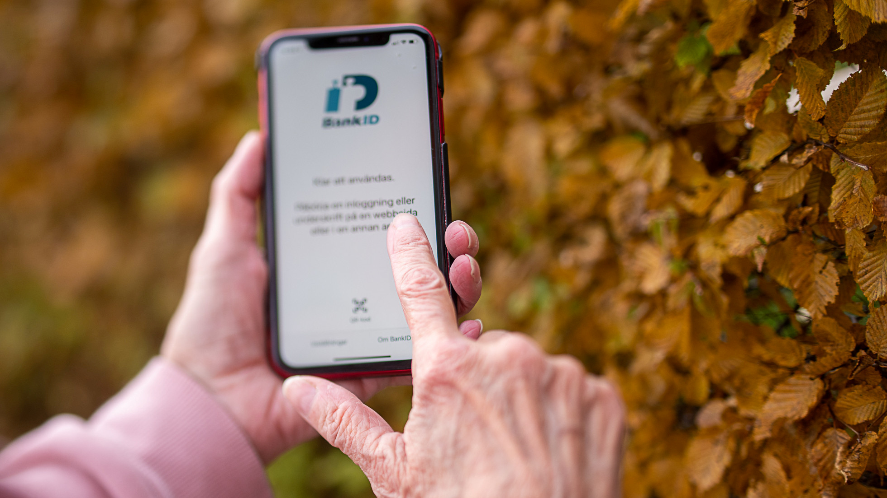

Mobilt Bank-ID lanseras 2011 och gör det möjligt att både logga in och signera på webben. Något som öppnar upp för att en rad mynidghetsärenden enklare kan utföras på internet samt förenklar e-handeln och banar väg för Swish.
Samma grupp lanserar ett år senare den mobila betaltjänsten Swish som möjliggörs av att den som skickar pengar signerar överföringen med Mobilt Bank-ID. Plötsligt blir enkelt att dela på notan för ett restaurangbesök eller att köpa en gammal vas på loppmarknaden utan att behöva hantera kontanter.
Användningen av både Mobilt Bank-ID och Swish ökar stort under hela 2010-talet. 2019 använder 84 procent av Sveriges befolkning (16+ år) Mobilt BankID och nästan lika många, 79 procent Swish, enligt undersökningen Svenskarna och internet. Bland de svenskar som har en smartmobil är det hela 94 procent som använder Mobilt BankID.
Andelen kontanta betalningar i handeln minskar från nära 40 till cirka 15 procent mellan 2010 och 2016, många bankkontor har slutat ta emot kontanter och 2025 väntas hälften av alla butiker ha slutat acceptera kontanter enligt en SIFO-undersökning från Bankomat AB 2019 (som också det ägs av de svenska storbankerna). Detta gör Sverige unikt i världen som det land som använder minst kontanter.
Många välkomnar utvecklingen, bland annat den fackliga organisationen Finansförbundet som pekar på att det minimerar risken för rån. Men det finns också en hel del kritik mot utvecklingen. Bland annat kring den personliga integriteten, när alla våra transaktioner blir digitala (spårbara) går det inte att vara helt anonym. Exempelvis organisationen Sveriges Konsumenter har pekat på att våra köp kan avslöja allt från politiska åsikter till sexuell läggning.
